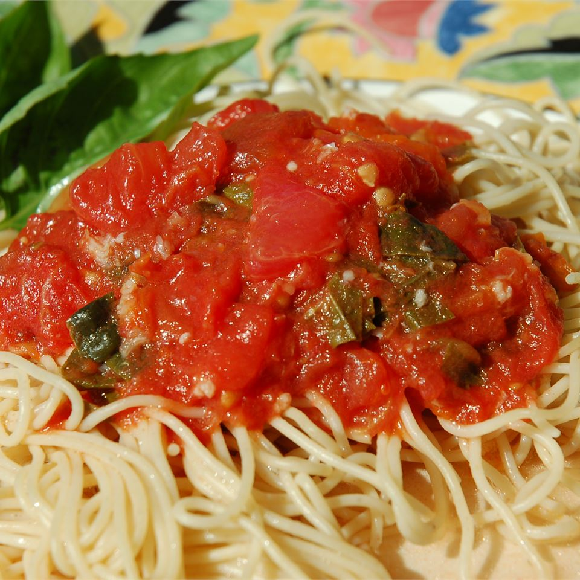

Tomato pasta

The tomato pasta are classic but unreplacable dish that you need to eat with the person will spent your life forever with
General info
- Preparation time: 10 min
- Additional time: 12 min
- Total time: 22 min
- Servings: 2
Ingredients
- 1 package pasta
- 1 clove garlic
- 1 medium tomato
- 1 teaspoon dried basil
Steps
- Fill a large pot with lightly slated water and bring to a rolling boil over high heat
- Coarsely chop the tomato and transfer to a small bowl. Sprinkle the tomato chunks with basil, olive oil, and salt. Set aside.
- Once the water is boiling, stir in the rigatoni, and return to a boil. Cook the pasta uncovered, stirring occasionally, until the pasta has cooked through, but is still firm to the bite, about 12 minutes. Drain well in a colander, and then return the pasta to the pot.
- Pour the tomato mixture over the pasta and toss to mix.
Home page